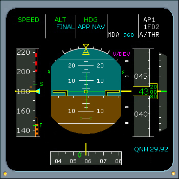

AP/FD Vertical Mode FMAs
FINAL - Armed
The armed FINAL vertical mode and APP NAV lateral mode annunciations are displayed when;
- A non-ILS-LOC approach is selected from the MCDU database, and
- The APPR button is pushed
If proceeding in the NAV lateral engaged mode when pushing the APPR button, then the armed FINAL vertical mode and the lateral APP NAV engaged mode annunciations are displayed.
When both the vertical FINAL and lateral APP NAV paths are captured, then the engaged FINAL APP annunciation is displayed (engaged).
|  |